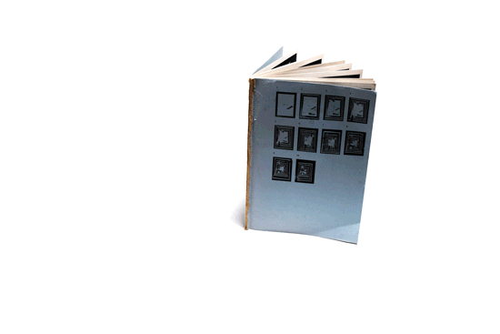
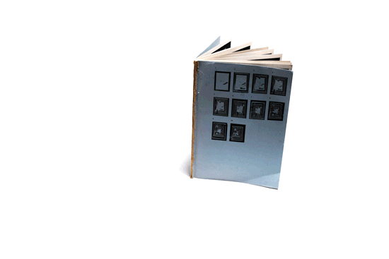
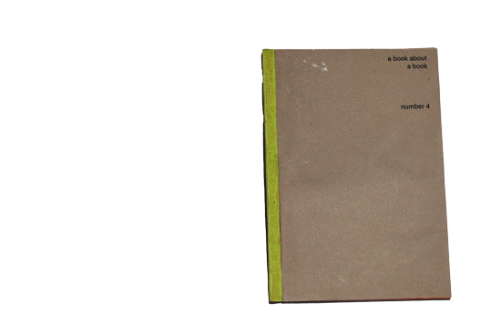
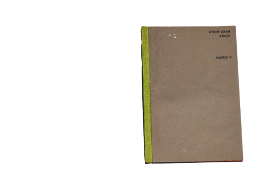

01
The day a poor form became rich
object, 2023
01
The day a poor form became rich
object, 2023

"The day a poor form became rich" is a tiny-scale project using waste material in an act of revaluation.
The initial intention was to understand the mechanism behind the industrially produced aluminium clip through the practice of reproducing it, based on a broad and heterogenous survey of existing metal clips.
A evolving range of clips are made from aluminium waste using only the techniques available in their given production context. Each produced clip follows dimensions drawn from ISO paper standards, allowing for simplified calculations, appealing proportions, and the possibility of an array of scales
Functionally, the clips attach to surfaces, work as display devices for holding papers, and can clip onto each other to build lightweight structures. The clips also work as tools for assembling further clips — holding springs to metal plates while fastening zip ties and acting as benchmarks for placement of holes and indentations on the plates.
On a representational level, the clips exemplify the idea that developing things at one scale means developing them on all scales. here
 


 
